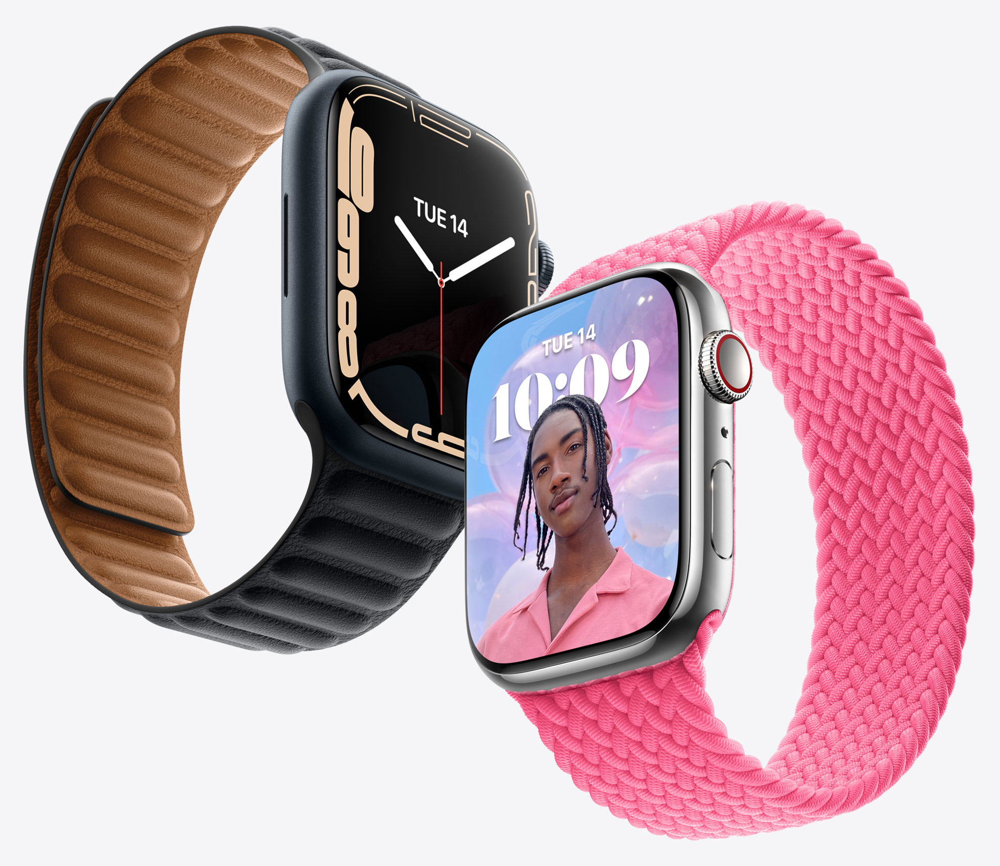

Watch Series 7
Full screen ahead.

Big screen. Huge impact. The challenge was to create a bigger
display while barely expanding the dimensions of the watch itself.
To do so, the display was completely re-engineered reducing the borders
by 40%, allowing for more screen area than both Series 6 and Series 3. Now that’s something to smile
about.